Shenyuan Gao1,2、Jiazhi Yang2、Li Chen2,5、Kashyap Chitta3,4、Yihang Qiu2、Andreas Geiger3,4†、Jun Zhang1†、Hongyang Li2,5†
1 Hong Kong University of Science and Technology 2 OpenDriveLab at Shanghai AI Lab 3 University of Tübingen 4 Tübingen AI Center 5 University of Hong Kong
コードとモデル：github.com/OpenDriveLab/Vista デモページ：opendrivelab.com/Vista
第 38 回 Conference on Neural Information Processing Systems（NeurIPS 2024）、arXiv:2405.17398v5 [cs.CV]、2024年10月28日
翻訳について：原文 PDF は
40_Vista_2405.17398.pdf（全 31 ページ）。本文、図の説明、図中ラベル、表、脚注、付録を訳出し、論文タイトルと参考文献は原文のまま掲載。図は原図を掲載し、英語ラベルの日本語訳を併記した。数式・数値・引用番号・コードの識別子は原文を維持。原文の記述に関する補足は「訳注」と明示し、本文と区別している。
世界モデルはさまざまな行動の結果を予見することができ、これは自動運転にとって極めて重要である。しかしながら、既存の運転世界モデルには、未知の環境への汎化、重要な細部の予測忠実度、柔軟な応用のための行動制御可能性という点で依然として限界がある。本論文では、高い忠実度と多様な制御可能性を備えた汎化可能な運転世界モデル Vista を提示する。既存手法の体系的な診断に基づき、これらの限界に対処するためのいくつかの重要な要素を導入する。高解像度で実世界のダイナミクスを正確に予測するために、移動するインスタンスと構造的情報の学習を促進する 2 つの新しい損失を提案する。また、一貫性のある長期ロールアウトのために、過去フレームを事前情報として注入する効果的な潜在置換（latent replacement）手法を考案する。行動制御可能性については、高レベルの意図（コマンド、目標点）から低レベルの操作（軌跡、角度、速度）に至る多様な制御の集合を、効率的な学習戦略によって組み込む。大規模な学習の後、Vista の能力はさまざまなシナリオへシームレスに汎化できる。複数のデータセットでの広範な実験により、Vista は最先端の汎用動画生成器を 70% 以上の比較で上回り、最高性能の運転世界モデルを FID で 55%、FVD で 27% 上回ることが示された。さらに、Vista 自体の能力を利用して、真値の行動にアクセスすることなく実世界の行動を評価するための汎化可能な報酬を、初めて確立する。
主たる連絡先：Shenyuan（
sygao@connect.ust.hk）。†同等の指導。
スケーラブルな学習技術に牽引され、自動運転はここ数年で目覚ましい進歩を遂げてきた［18, 58, 135］。しかし、複雑な状況や分布外の状況は、最先端の技術にとっても依然として手に負えない［83］。有望な解決策の 1 つは世界モデル［57, 76］にある。世界モデルは過去の観測と選択肢となる行動から世界の将来の可能な状態を推論し、ひいてはそれらの行動の実行可能性を評価する。世界モデルは不確実性の下で推論し、壊滅的な誤りを回避する可能性を秘めており［54, 76, 127］、それによって自動運転における汎化と安全性を促進する。
世界モデルの主要な見込みは新しい環境への汎化能力を可能にすることであるが、既存の運転世界モデルは依然としてデータ規模［90, 125, 127, 143, 147］と地理的な範囲［54, 61］によって制約されている。表 1 と図 1 にまとめたように、これらはしばしば低いフレームレートと解像度に限定されており、重要な細部の喪失を招いている。さらに、ほとんどのモデルは操舵角と速度のような単一の制御モダリティしかサポートしていない。これは、高レベルの意図から低レベルの操作に至るさまざまな行動形式を表現するには不十分であり、一般的なプランニングアルゴリズムの出力とも互換性がない［12, 14, 21, 56, 58, 64］。加えて、行動制御可能性を未知のデータセットへ汎化させることは十分に研究されていない。これらの限界は既存研究の適用可能性を妨げており、これらの限界を克服する世界モデルの開発が急務となっている。
| 手法 | モデル設定 | 行動制御モード | |||||
|---|---|---|---|---|---|---|---|
| データ規模 | フレームレート | 解像度 | 角度と速度 | 軌跡 | コマンド | 目標点 | |
| DriveSim［102］ | 7h | 5 Hz | 80×160 | ✓ | |||
| DriveGAN［68］ | 160h | 8 Hz | 256×256 | ✓ | |||
| DriveDreamer［125］ | 5h | 12 Hz | 128×192 | ✓ | |||
| Drive-WM［127］ | 5h | 2 Hz | 192×384 | ✓ | |||
| WoVoGen［90］ | 5h | 2 Hz | 256×448 | ✓ | |||
| ADriver-I［61］ | 300h | 2 Hz | 256×512 | ✓ | |||
| GenAD［136］ | 2000h | 2 Hz | 256×448 | ✓ | ✓ | ||
| GAIA-1［54］ | 4700h | 25 Hz | 288×512 | ✓ | |||
| Vista（提案手法） | 1740h | 10 Hz | 576×1024 | ✓ | ✓ | ✓ | ✓ |
表1：実世界の運転世界モデル。大規模で高品質な運転データで学習した Vista は、高い時空間解像度で動作し、多様な行動制御可能性をサポートする。灰色の網掛け＝非公開データ。
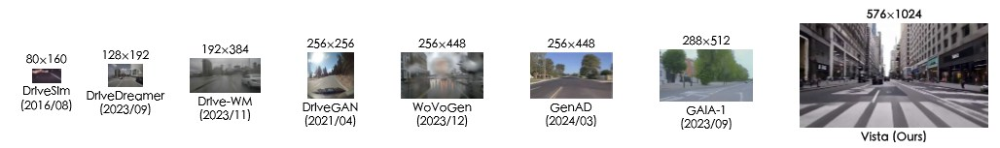
図1：解像度の比較。Vista は先行文献よりも高い解像度で予測を行う。
図中ラベル：各サムネイルの上に解像度、下にモデル名と（発表年/月）を示す。Vista (Ours)＝Vista（提案手法）
この目的のために、我々は Vista を導入する。Vista は、ドメインをまたぐ汎化、高忠実度の予測、マルチモーダルな行動制御可能性に優れた運転世界モデルである。具体的には、汎化能力を育むために、世界中の運転動画の大規模コーパス［136］で予測モデルを開発する。一貫性のある将来の外挿を可能にするため、Vista を 3 つの本質的な動的事前情報で条件付けする（3.1 節）。標準的な拡散損失［5］のみに頼るのではなく、ダイナミクスを強化し構造的な細部を保存するための 2 つの明示的な損失関数を導入し（3.1 節）、高解像度で現実的な将来をシミュレートする Vista の能力を促進する。柔軟な制御可能性のために、コマンドや目標点のような高レベルの意図と、軌跡・操舵角・速度のような低レベルの操作の両方を含む多様な行動形式の集合を組み込む。これらの行動条件は統一されたインタフェースを介して注入され、そのインタフェースは効率的な学習戦略によって学習される（3.2 節）。その結果、図 2 に示すように、Vista は 10 Hz・576×1024 ピクセルで現実的な将来を予見する能力を獲得し、さまざまな粒度にわたる多様な行動制御可能性を得る。また、異なる行動の信頼性を評価する汎化可能な報酬関数としての Vista の可能性も実証する。
我々の貢献は 3 つある。(1) 高い時空間解像度で現実的な将来を予測できる汎化可能な運転世界モデル Vista を提示する。その予測忠実度は、ダイナミクスを捉え構造を保存する 2 つの新しい損失と、長期ロールアウトにおける一貫性を維持するための網羅的な動的事前情報によって大きく向上する。(2) 効率的な学習戦略に推進され、統一された条件付けインタフェースを通じて多様な行動制御可能性を Vista に統合する。Vista の行動制御可能性はゼロショットで異なるドメインへも汎化できる。(3) Vista の有効性を検証するために、複数のデータセットにわたる包括的な実験を行う。Vista は最も競争力のある汎用動画生成器を上回り、nuScenes で新たな最先端を達成する。我々の実証的な証拠は、Vista が行動を評価する報酬関数として使用できることを示している。
Vista を、画像から動画を生成する潜在拡散モデルである事前学習済みの Stable Video Diffusion（SVD）［5］で初期化する。サンプリングの柔軟性のために、SVD は連続タイムステップの定式化［66, 111］を採用している。SVD はデータサンプル \( \boldsymbol{x} \) を拡散過程 \( p(\boldsymbol{n}|\boldsymbol{x}) \sim \mathcal{N}(\boldsymbol{x}, \sigma^2\mathbf{I}) \) によってノイズ \( \boldsymbol{n} \) に変換し、ガウスノイズから潜在変数を \( \sigma_0 = 0 \) に向けて段階的にデノイズすることで新しいサンプルを生成する。SVD の学習は \( \mathbb{E}_{\boldsymbol{x},\sigma,\boldsymbol{n}}\left[\lambda_\sigma \| D_\theta(\boldsymbol{n};\sigma) - \boldsymbol{x}\|^2\right] \) の最小化に簡略化できる。ここで \( D_\theta \) はパラメータ化された UNet デノイザであり、\( \lambda_\sigma \) は再重み付け関数で、以降は簡潔のため省略する。この枠組みに基づき、SVD はノイズを含む潜在変数の系列 \( \boldsymbol{n} = \{n_1, n_2, ..., n_K\} \in \mathbb{R}^{K\times C\times H\times W} \) を処理し、\( K = 25 \) フレームの動画を生成する。生成過程は条件画像によって誘導され、その潜在変数はチャネル方向に入力へ連結され、内容生成の参照として機能する。
高い美的品質にもかかわらず、SVD には運転世界モデルとして機能するためのいくつかの重要な性質が欠けている。4 節で示すように、SVD が予測する最初のフレームは条件画像と同一ではなく、内容の不整合のために自己回帰的なロールアウトには実用的でない。加えて、SVD は運転シナリオの複雑なダイナミクスに苦戦し、もっともらしくない動きを生じる。さらに、SVD はいかなる行動形式によっても制御できない。これに対して、我々は現実的なダイナミクスを伴う高忠実度の将来を予測する汎化可能な運転世界モデルの構築を目指す。そのモデルは、図 2 に示すように、長期にわたって連続的に延長可能であり、マルチモーダルな行動によって柔軟に制御可能であるべきである。
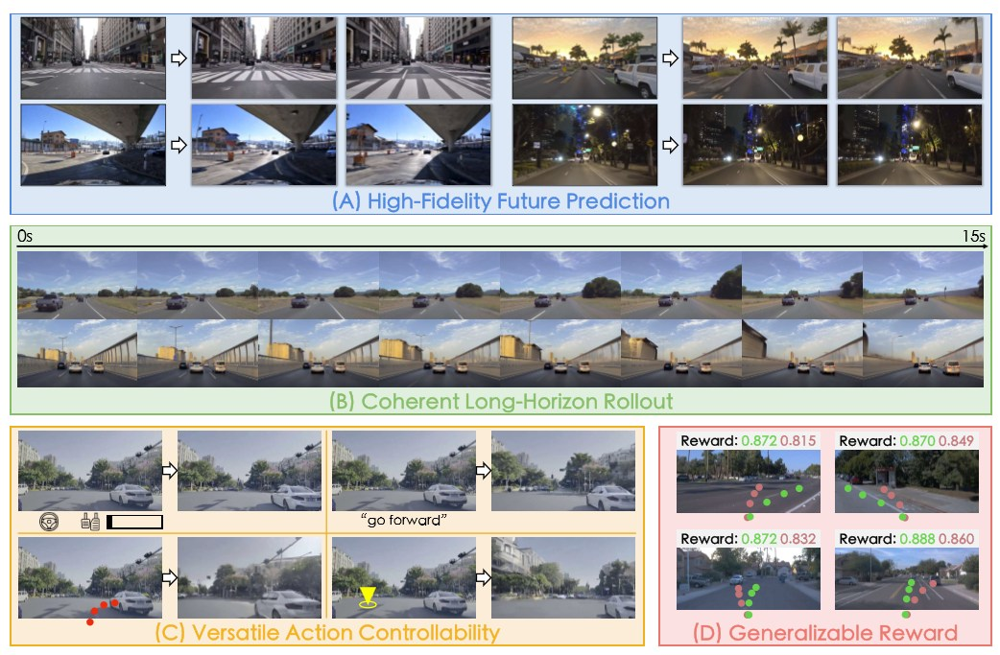
図2：Vista の能力。任意の環境から出発して、Vista は高い時空間解像度で現実的かつ連続的な将来を予見できる (A–B)。Vista はマルチモーダルな行動によって制御でき (C)、実世界の運転行動を評価する汎化可能な報酬関数として機能する (D)。
図中ラベル：(A) High-Fidelity Future Prediction＝高忠実度の将来予測、(B) Coherent Long-Horizon Rollout＝一貫性のある長期ロールアウト（0s〜15s）、(C) Versatile Action Controllability＝多様な行動制御可能性（"go forward"＝「前進」）、(D) Generalizable Reward＝汎化可能な報酬（Reward＝報酬。緑と赤の数値はそれぞれ緑・赤の軌跡に対する報酬）
図 3 に示すように、Vista は 2 段階の学習パイプラインを採用する。まず、一貫性のある将来予測を可能にする潜在置換手法と、忠実度を高める 2 つの新しい損失を含む専用の予測モデルを構築する（3.1 節）。未知のシナリオへの汎化を確実にするため、学習には最大の公開運転データセット［136］を利用する。第 2 段階では、効率的かつ協調的な学習戦略によって、マルチモーダルな行動を組み込んで行動制御可能性を学習する（3.2 節）。Vista の能力を用いて、さらに行動を評価する汎化可能な手法を導入する（3.3 節）。
基本設定。世界モデルは現在の状態から将来を予測するために始動されるので、その予測の始まりは条件画像としっかり揃っているべきである。そこで、学習中に最初のフレームを条件画像とし、ノイズ拡張（noise augmentation）［5, 49］を取り除くことで、SVD を専用の予測モデルに調整する。この予測能力により、Vista は短期のクリップを反復的に予測し、条件画像を最後のクリップでリセットすることで、長期のロールアウトを実行できる。
動的事前情報の注入。しかしながら、前述の設定を学習に用いると、特に長期ロールアウトにおいて、過去フレームに対して不合理なダイナミクスがしばしば生じる。我々は、これは主に将来の動きの傾向に関する事前情報の不足による曖昧さから生じると推測しており、これは既存の運転世界モデル［54, 68, 125, 127, 136］に共通する限界でもある。
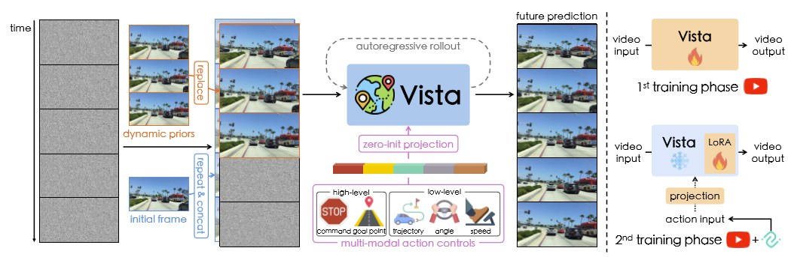
図3：［左］：Vista のパイプライン。初期フレームに加えて、Vista は潜在置換を介して将来のダイナミクスに関するより多くの事前情報を吸収できる。その予測はさまざまな行動によって制御でき、自己回帰的なロールアウトによって長期へ延長できる。［右］：学習手順。Vista は 2 つの学習段階を経る。第 2 段階では事前学習済みの重みを凍結して行動制御を学習する。
図中ラベル：time＝時間、dynamic priors＝動的事前情報、replace＝置換、initial frame＝初期フレーム、repeat & concat＝反復と連結、autoregressive rollout＝自己回帰的ロールアウト、zero-init projection＝ゼロ初期化射影、multi-modal action controls＝マルチモーダル行動制御、high-level＝高レベル、low-level＝低レベル、command＝コマンド、goal point＝目標点、trajectory＝軌跡、angle＝角度、speed＝速度、future prediction＝将来予測、video input／video output＝動画入力／動画出力、1st training phase＝第 1 学習段階、2nd training phase＝第 2 学習段階、projection＝射影、action input＝行動入力
一貫性のある将来を推定するには、シーン内のインスタンスの将来の動きを本質的に支配する、少なくとも 3 つの本質的な事前情報、すなわち位置、速度、加速度が必要である。速度と加速度はそれぞれ位置の 1 階および 2 階の導関数であるため、これらの事前情報は条件付けに 3 つの連続フレームを用いることで完全に導出できる。具体的には、条件フレームの有無を示す長さ \( K \) のフレーム単位のマスク \( \boldsymbol{m} \in \{0,1\}^K \) を構築する。マスクは時間順に従って逐次的に設定され、最大 3 つの要素が 1 に割り当てられて 3 つの条件フレームを表す。入力に追加のチャネルを連結する代わりに、対応するノイズを含む潜在変数 \( n_i \) を、画像エンコーダで符号化されたクリーンな潜在変数 \( z_i \) で置き換えることで、新しい条件フレームを注入する。形式的には、入力潜在変数は \( \hat{\boldsymbol{n}} = \boldsymbol{m}\cdot\boldsymbol{z} + (1-\boldsymbol{m})\cdot\boldsymbol{n} \) として構築される（図 3［左］参照）。クリーンな潜在変数を識別するため、事前学習済みの重みから新しいタイムステップ埋め込みを複製し、\( \boldsymbol{m} \) に従って条件フレームに割り当てる。条件フレームと予測フレームのタイムステップ埋め込みは別々に学習される。チャネル方向の連結と比較して、潜在変数の置換は、さまざまな数の条件フレームを吸収するうえでより効果的かつ柔軟であることがわかった。加えて、置換された潜在変数を SVD に直接適用しても、その生成品質は劣化しないことを観察した。したがって、学習を開始したときに元の性能が乱されることはない。観測済みの条件フレームを予測する必要はないため、次のようにそれらを損失から除外する。
\[ \mathcal{L}_{\text{diffusion}} = \mathbb{E}_{\boldsymbol{z},\sigma,\hat{\boldsymbol{n}}}\left[\sum_{i=1}^{K}(1-m_i)\odot\|D_\theta(\hat{n}_i;\sigma) - z_i\|^2\right], \tag{1} \]
ここで \( D_\theta \) は SVD と同じアーキテクチャを共有する UNet デノイザである。十分な事前情報を保持する置換された潜在変数により、Vista は周囲のインスタンスの状態を完全に捉え、反復的なロールアウトを通じてより一貫性がありもっともらしい長期の将来を予測できる。実際には、ロールアウト中、予測されたクリップの最後の 3 フレームを次の予測ステップの動的事前情報として活用する。
ダイナミクス強化損失。比較的小さな空間を扱う一般的な動画とは異なり、運転動画ははるかに大きなシーンを捉える［136］。ほとんどの運転動画では、遠方の単調な領域が視野を支配し、移動する前景インスタンスは比較的小さな領域しか占めない［17］。しかし、後者はしばしばより高い確率的変動性を示し、その予測を複雑にする。式 (1) はすべての出力を一様に教師するため、図 4(b) に示すように、異なる領域の微妙な差異を効果的に識別できない。その結果、モデルは重要な領域における現実的なダイナミクスの予測を効率的に学習できない。
隣接する 2 フレーム間の差異は相当な動きのパターンを提供するため［123, 132］、重要な領域のダイナミクスの学習を促す追加の教師を導入する。具体的には、まず、予測が真値と比べて不整合な動きを持つ領域を強調する、ダイナミクスを考慮した重み \( \boldsymbol{w} = \{w_2, w_3, ..., w_k\} \in \mathbb{R}^{K-1\times C\times H\times W} \) を導入する。
\[ w_i = \|(D_\theta(\hat{n}_i;\sigma) - D_\theta(\hat{n}_{i-1};\sigma)) - (z_i - z_{i-1})\|^2. \tag{2} \]
数値的安定性のため、各動画クリップ内で \( \boldsymbol{w} \) を正規化する。図 4(c) に示すように、この重みは大きな動きの不一致の存在を増幅し、単調な背景を除外しつつ動的な領域を強調する。将来予測の因果性、すなわち後続のフレームは先行するフレームに従うべきであることを踏まえ、隣接する各フレーム対の後方のフレームにペナルティを課すことで新しい損失を定義する。
\[ \mathcal{L}_{\text{dynamics}} = \mathbb{E}_{\boldsymbol{z},\sigma,\hat{\boldsymbol{n}}}\left[\sum_{i=2}^{K}\texttt{sg}(w_i)\odot(1-m_i)\odot\|D_\theta(\hat{n}_i;\sigma) - z_i\|^2\right], \tag{3} \]
ここで \( \texttt{sg}(\cdot) \) は勾配を停止する。標準的な拡散損失を適応的に再重み付けすることで、\( \mathcal{L}_{\text{dynamics}} \) は動的な領域、例えば図 4(d) の移動する車両や歩道の学習効率を高めることができる。
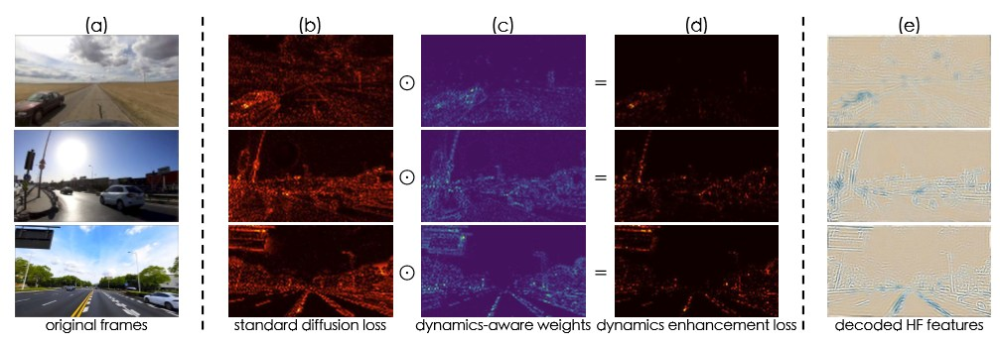
図4：損失設計の図解。一様に分布する標準的な拡散損失 (b) とは異なり、我々のダイナミクス強化損失 (d) は、ダイナミクスのモデリングのために重要な領域 (c)（例えば移動する車両や道路脇）への適応的な集中を可能にする。さらに、高周波特徴 (e) を明示的に教師することで、構造的な細部（例えばエッジや車線）の学習を強化できる。
図中ラベル：original frames＝元のフレーム、standard diffusion loss＝標準的な拡散損失、dynamics-aware weights＝ダイナミクスを考慮した重み、dynamics enhancement loss＝ダイナミクス強化損失、decoded HF features＝デコードした高周波（HF）特徴
構造保存損失。知覚品質と動きの強さとのトレードオフは動画生成において広く認識されており［3, 32, 73, 144］、我々の場合も例外ではない。動的な運転シナリオの高解像度予測においては、予測された構造的細部が過度に平滑化された物体や崩れた物体によって著しく劣化することがわかった。例えば、車両の輪郭は移動するにつれて急速にほどけてしまう（図 12 参照）。この問題を緩和するには、構造的細部をより重視することが重要である。エッジやテクスチャといった構造的細部は主に高周波成分に存在するという事実に基づき、それらを周波数領域で次のように同定する。
\[ z'_i = \mathcal{F}(z_i) = \texttt{IFFT}\big(\mathcal{H}\odot\texttt{FFT}(z_i)\big), \tag{4} \]
ここで \( \texttt{FFT} \) と \( \texttt{IFFT} \) はそれぞれ 2 次元離散フーリエ変換と逆離散フーリエ変換であり、\( \mathcal{H} \) はある閾値未満の低周波成分を切り捨てる理想的な 2 次元ハイパスフィルタである。フーリエ変換は \( z_i \) の各チャネルに独立に適用される。図 4(e) に示すように、構造的情報に関連する特徴は式 (4) によって効果的に強調できる。予測された潜在変数 \( D_\theta(\hat{n}_i;\sigma) \) からの対応する特徴も同様に抽出できる。抽出した高周波特徴を用いて、新しい構造保存損失を次のように考案する。
\[ \mathcal{L}_{\text{structure}} = \mathbb{E}_{\boldsymbol{z},\sigma,\hat{\boldsymbol{n}}}\left[\sum_{i=1}^{K}(1-m_i)\odot\|\mathcal{F}(D_\theta(\hat{n}_i;\sigma)) - \mathcal{F}(z_i)\|^2\right]. \tag{5} \]
この損失関数は予測と真値の間の高周波特徴の不一致を最小化し、より多くの構造的情報を保持できるようにする。最終的な学習目的は式 (1)、式 (3)、式 (5) の重み付き和であり、\( \lambda_1 \) と \( \lambda_2 \) は最適化のバランスをとるトレードオフの重みである。
\[ \mathcal{L}_{\text{final}} = \mathcal{L}_{\text{diffusion}} + \lambda_1\mathcal{L}_{\text{dynamics}} + \lambda_2\mathcal{L}_{\text{structure}}. \tag{6} \]
多様な行動の統一的な条件付け。使用上の柔軟性を最大化するために、運転世界モデルは異なる特性を持つ複数の行動形式を活用できるべきである。例えば、世界モデルを用いて高レベルの方策を評価したり［127］、低レベルの操作を実行したりすることがある［102］。しかし、既存の手法は限られた行動制御しかサポートしておらず［54, 61, 90, 125, 127］、その柔軟性と適用可能性を妨げている。そこで、Vista に多様な行動モードの集合を組み込む。(1) 角度と速度は最も細粒度の行動制御を表す。角度を \( [-1, 1] \) に正規化し、速度を \( km/h \) で表す。異なるタイムスタンプからの信号は逐次的に連結される。(2) 軌跡は自車座標系における 2 次元変位の系列である。これはプランニングアルゴリズムの出力として広く用いられている［12, 21, 58, 62, 63］。軌跡をメートル単位で表し、1 つの系列に平坦化する。(3) コマンドは最も高レベルの意図である。一般性を失うことなく、4 つのコマンド、すなわち前進、右折、左折、停止を定義し、カテゴリのインデックスとして実装する。(4) 目標点は短期的な自車の目的地を初期フレームに投影した 2 次元座標であり、対話的なインタフェースとして機能する［74］。座標は画像サイズで正規化される。
これらの行動は異質であり、互換的に使用することはできない点に注意されたい。これらの行動をすべて数値系列に変換した後、それらをフーリエ埋め込み［114, 116］の統一的な連結として符号化する（図 3 参照）。これらの埋め込みは、UNet［5］のクロスアテンション層の入力次元を拡張する追加の射影を学習することで、まとめて取り込むことができる。新しい射影はゼロで初期化され、事前学習された状態からの段階的な学習を可能にする。クロスアテンション層を通じて行動条件を組み込むと、加算的な埋め込み［128, 136］のような他の手法と比べて、より速い収束とより強い制御可能性が得られることを経験的に見いだした。
効率的な学習。行動制御可能性は第 1 学習段階の後に学習する。総反復回数は拡散モデルの学習にとって極めて重要であるため［5, 22, 32, 99］、行動制御の学習を 2 つのステージに分ける。第 1 ステージでは、モデルを低解像度（320×576）で学習し、元の解像度（576×1024）と比べて 3.5 倍高い学習スループットを達成する。このステージが学習反復の大部分を占める。次に、学習した制御可能性が高解像度の予測に効果的に適合するよう、目的の解像度（576×1024）でモデルを短期間ファインチューニングする。
しかし、UNet［5］を低解像度で直接調整すると、高忠実度の予測能力が損なわれる可能性がある。逆に、UNet の重みをすべて凍結して新しい射影のみを学習すると品質の低下を招き（付録 D 参照）、UNet を適応可能にする必要性が示唆される。これを解決するため、事前学習済みの UNet を凍結し、パラメータ効率の高い LoRA アダプタ［55］を各アテンション層に導入する。学習後、低ランク行列は凍結された重みにシームレスに統合でき、追加の推論遅延を生じない。したがって、低解像度での学習時にも事前学習済みの重みはそのまま保たれ、事前学習された高忠実度の予測能力の劣化を回避できる。
オープンワールドのシナリオではカメラと車両のパラメータが利用できないため、推論時に複数の等価な行動条件を同時に得ることは不可能と思われる。加えて、行動条件のあらゆる可能な組み合わせを網羅するには、法外に高価な学習が必要となる。したがって、学習中にすべての条件を有効にする一般的な慣行とは異なり、各学習サンプルに対して行動形式のうち 1 つだけを有効にすることで、異なる行動形式の独立性を強制する。残りの行動条件は無条件入力としてゼロで埋められる。付録 D で示すように、この単純な制約は行動の組み合わせに学習コストを浪費することを防ぎ、同じ学習ステップ数の中で個々の行動モードの学習効率を最大化する。
協調学習。前述の行動条件は OpenDV-YouTube［136］では利用できないことに注意されたい。一方、nuScenes［10］にはこれらの条件を導出するのに十分なアノテーションがある。汎化を維持しつつ制御可能性を並行して学習するため、両データセットのサンプルを利用し、OpenDV-YouTube の行動条件をゼロに設定する協調学習戦略を導入する。行動制御の学習段階では式 (6) と同じ損失を採用する。2 つの相補的なデータセットから学習することで、Vista は新しいデータセットへ汎化可能な多様な制御可能性を獲得する。
世界モデルの応用の 1 つは、報酬モジュールを用いて行動を評価することである［40, 42, 43, 76］。Drive-WM［127］は外部の検出器［82, 84］を用いて報酬を確立している。しかし、これらの検出器は特定のデータセット［10］上で開発されており、任意のシナリオにおける報酬推定のボトルネックとなる可能性がある。一方、Vista は数百万件の人間の運転ログを取り込んでおり、シーンをまたいだ強い汎化を示す。分布外の条件は生成の多様性の増大につながるという観察［28, 60］に基づき、Vista 自身の予測の不確実性を報酬の源として利用する。Drive-WM とは異なり、我々の報酬関数は外部モデルに頼ることなく Vista の汎化性をシームレスに受け継ぐ。具体的には、条件付き分散によって不確実性を推定する。信頼性の高い近似のため、同じ条件フレーム \( \boldsymbol{c} \) と行動 \( \boldsymbol{a} \) を用いて、ランダムにサンプリングしたノイズから \( M \) 回デノイズする。そして報酬関数 \( R(\boldsymbol{c},\boldsymbol{a}) \) を、平均化した負の条件付き分散の指数関数として定義する。
\[ \mu' = \frac{1}{M}\sum_{m} D_\theta^{(m)}(\hat{\boldsymbol{n}};\boldsymbol{c},\boldsymbol{a}), \tag{7} \]
\[ R(\boldsymbol{c},\boldsymbol{a}) = \texttt{exp}\Big[\texttt{avg}\Big(-\frac{1}{M-1}\sum_{m}(D_\theta^{(m)}(\hat{\boldsymbol{n}};\boldsymbol{c},\boldsymbol{a}) - \mu')^2\Big)\Big], \tag{8} \]
ここで \( \texttt{avg}(\cdot) \) は動画クリップ内のすべての潜在値を平均する。この定式化に基づき、不確実性の大きい好ましくない行動はより低い報酬をもたらす。一般的に用いられる評価プロトコル（例えば L2 誤差）とは対照的に、我々の報酬関数は真値の行動を参照することなく行動を評価できる。定義を簡潔にするため推定報酬は正規化していないが、推定報酬をある係数で再スケーリングすることで相対的な差を増幅するのは容易であることに注意されたい。
| 指標 | DriveGAN［102］ | DriveDreamer［125］ | WoVoGen［90］ | Drive-WM［127］ | GenAD［136］ | Vista（提案手法） |
|---|---|---|---|---|---|---|
| FID ↓ | 73.4 | 52.6 | 27.6 | 15.8 | 15.4 | 6.9 |
| FVD ↓ | 502.3 | 452.0 | 417.7 | 122.7 | 184.0 | 89.4 |
表2：nuScenes 検証セットにおける予測忠実度の比較。Vista は最先端の運転世界モデルを大幅な性能向上で上回る、有望な結果を達成している。（訳注：表 1 では DriveGAN の引用番号は［68］、［102］は DriveSim であり、本表の「DriveGAN［102］」は引用番号の不整合と思われる。）
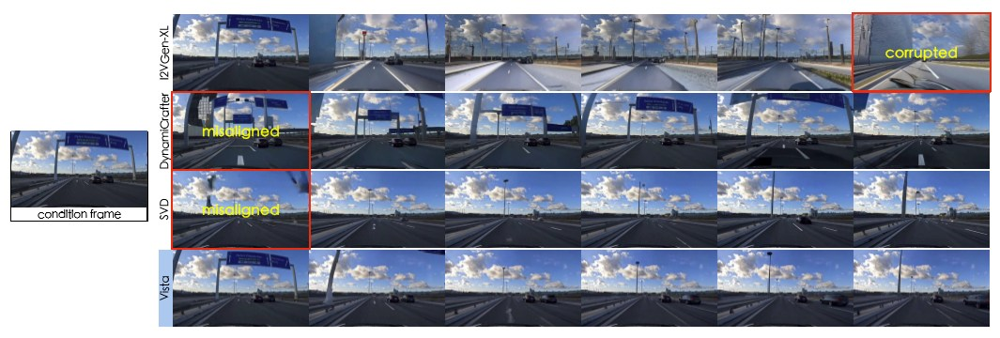
図5：同じ条件フレームを用いて異なるモデルが予測した運転の将来。Vista を、公開されている動画生成モデルとそれらのデフォルト設定で対比する。従来のモデルはずれた結果や破綻した結果を生成するが、Vista にはこうした欠点がない。
図中ラベル：condition frame＝条件フレーム、misaligned＝ずれ、corrupted＝破綻。行は上から I2VGen-XL、DynamiCrafter、SVD、Vista。
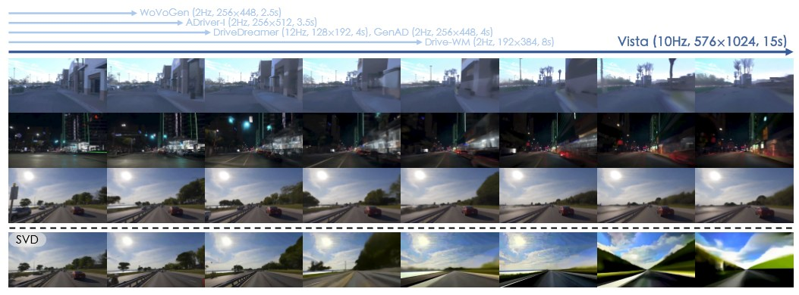
図6：［上］：長期予測。Vista は大きな劣化なしに 15 秒間の高解像度の将来を予測でき、長い走行距離を網羅する。青い線の長さは、従来研究で示された最長の予測の持続時間を示す。［下］：SVD の長期延長の結果。SVD は Vista のように一貫性のある高忠実度の動画を自己回帰的に生成することができない。
図中ラベル：WoVoGen (2Hz, 256×448, 2.5s)、ADriver-I (2Hz, 256×512, 3.5s)、DriveDreamer (12Hz, 128×192, 4s)、GenAD (2Hz, 256×448, 4s)、Drive-WM (2Hz, 192×384, 8s)、Vista (10Hz, 576×1024, 15s)＝各モデル（フレームレート、解像度、予測の長さ）
本節では、まず 4.1 節で汎化と忠実度における Vista の強みを示す。次に 4.2 節で行動制御の効果を示す。また 4.3 節で提案する報酬関数の有効性を実証する。最後に 4.4 節で主要な設計に関するアブレーション研究を行う。実装の詳細と実験結果の詳細については、付録 C と付録 D を参照されたい。
自動評価。どの運転世界モデルも公開されていないため、nuScenes における定量的結果でこれらの手法と比較する。FID［47］と FVD［115］の評価を行うため、検証セットから 5369 個の有効なサンプルを抽出する。FID の評価では、予測フレームを 256×448 の解像度にクロップしリサイズする。FVD の評価では、LVDM［46］に従い、各動画クリップの 25 フレームすべてを用いて 224×224 にダウンサンプリングする。表 2 にすべての手法の結果を示す。両指標において、Vista は従来の運転世界モデルを大きな差で上回っている。
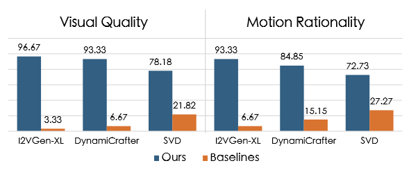
図7：人間による評価の結果。値は一方のモデルが他方より好まれた回数の割合を表す。Vista は両方の指標で既存研究を上回る。
図中ラベル：Visual Quality＝視覚的品質、Motion Rationality＝動きの合理性、Ours＝提案手法、Baselines＝ベースライン
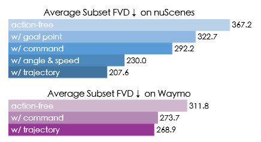
図8：行動制御の有効性。行動制御を適用すると、実データにより類似した予測が得られる。
図中ラベル：Average Subset FVD ↓ on nuScenes／on Waymo＝nuScenes／Waymo におけるサブセット平均 FVD ↓、action-free＝行動なし、w/ goal point＝目標点あり、w/ command＝コマンドあり、w/ angle & speed＝角度と速度あり、w/ trajectory＝軌跡あり
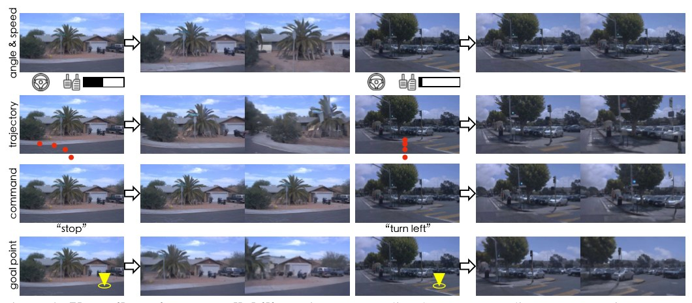
図9：多様な行動制御可能性。Vista は多様なシナリオにわたって、マルチモーダルな行動条件に応じた対応する結果を予測できる。さらなる結果は付録 E にある。
図中ラベル：angle & speed＝角度と速度、trajectory＝軌跡、command＝コマンド、goal point＝目標点、"stop"＝「停止」、"turn left"＝「左折」
人間による評価。異なるデータセットにわたる Vista の汎化を分析するため、Web 規模のデータで学習された 3 つの代表的な汎用動画生成器［5, 133, 144］と比較する（図 5 参照）。FVD［115］のような自動指標は、実世界のダイナミクスはもちろん、知覚品質すら決定的に明らかにできないことが知られている［3, 6, 32, 130, 136］。そこで、より忠実な分析のために人間による評価を選択する。最近の進展［3, 5, 6, 15, 16, 32, 122, 126］に従い、二肢強制選択（Two-Alternative Forced Choice）プロトコルを採用する。具体的には、参加者に左右に並べた動画のペアを提示し、2 つの直交する観点、すなわち視覚的品質と動きの合理性について、より良いと思う動画を選ぶよう求める。潜在的なバイアスを避けるため、各動画を固定のアスペクト比にクロップし、同じ解像度にダウンサンプリングし、Vista が他より長い動画を生成する場合は余分なフレームを切り詰める。他のモデルに合わせるため、条件フレームは 1 枚のみ与える。シーンの多様性を確保するため、4 つの代表的なデータセット、すなわち OpenDV-YouTube-val［136］、nuScenes［10］、Waymo［112］、CODA［79］から 60 シーンを均等に集める。これらのデータセットは全体として実世界の運転の複雑さと多様性を例示している。例えば、OpenDV-YouTube-val はジオフェンスで区切られた地域を含み、Waymo は我々の学習データと比べて独特なドメインを提供し、CODA は極めて困難なコーナーケースを含む。33 名の参加者から合計 2640 件の回答を収集した。図 7 に示すように、Vista は両方の観点ですべてのベースラインを上回り、運転のダイナミクスに対する深い理解を示している。さらに、短期の生成にしか適用できない他のモデルとは異なり、図 6 に示すように、Vista はより多くの動的事前情報を受け入れ、一貫性のある長期ロールアウトを生成できる。
定量的結果。行動制御の効果を評価するため、nuScenes と未知の Waymo データセットの両方の検証セットを、我々のコマンドのカテゴリに従って 4 つのサブセットに分割する。次に、真値の行動の異なるモダリティを用いて予測を生成する。FVD スコアを各サブセットで測定し、平均する。FVD スコアが低いほど真値の動画に近い分布であることを反映し、予測がそれぞれの特定の種類の振る舞いにより類似していることを示す。図 8 は、我々の行動制御が対応する動きを効果的に模倣できることを示している。
また、制御の一貫性を評価するために、軌跡差（Trajectory Difference）と呼ぶ新しい指標を導入する。GenAD［136］に従い、動画クリップから対応する軌跡を推定する逆ダイナミクスモデル（IDM）を学習する。IDM の図解を図 13 に示す。次に、Vista の予測を IDM に入力し、真値の軌跡と推定された軌跡との L2 差を計算する。差は 2 秒間にわたって測定する。軌跡差が小さいほど、Vista がより強い制御の一貫性を示すことになる。実験は nuScenes と Waymo で行う。各データセットについて、537 サンプルを含むサブセットを収集する。表 3 に報告するように、Vista は異なるモダリティの行動によって効果的に制御でき、真値とより一貫した動きをもたらす。
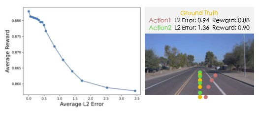
図10：［左］：異なる L2 誤差に対する Waymo での平均報酬。［右］：ケーススタディ。我々の報酬の相対的な差は、L2 誤差では判断できない行動を適切に評価できる。
図中ラベル：Average Reward＝平均報酬、Average L2 Error＝平均 L2 誤差、Ground Truth＝真値、Action1／Action2＝行動 1／行動 2、L2 Error＝L2 誤差、Reward＝報酬
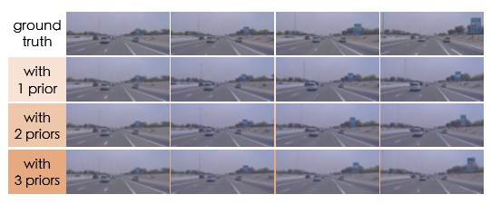
図11：動的事前情報の効果。より多くの動的事前情報を注入すると、白い車両や左側の看板の動きなど、真値とより一貫した将来の動きが得られる。
図中ラベル：ground truth＝真値、with 1 prior／with 2 priors／with 3 priors＝事前情報 1 個／2 個／3 個
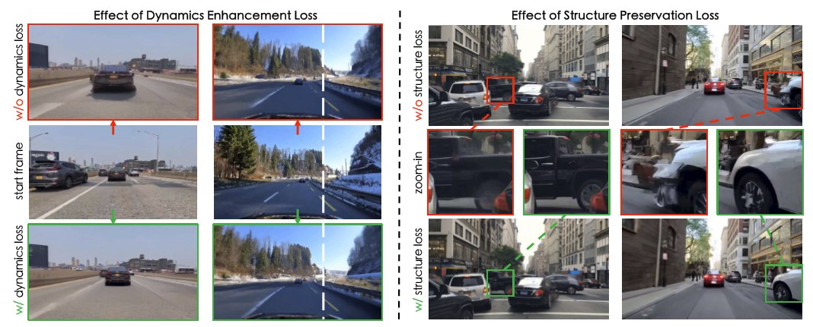
図12：［左］：ダイナミクス強化損失の効果。ダイナミクス強化損失で教師されたモデルは、より現実的なダイナミクスを生成する。1 つ目の例では、前方の車は静止したままではなく正常に前進する。2 つ目の例では、自車が右に操舵すると、実世界の幾何学的規則に従って木々が自然に左へ移動する。［右］：構造保存損失の効果。提案する損失は、物体が移動する際により鮮明な輪郭をもたらす。
図中ラベル：Effect of Dynamics Enhancement Loss＝ダイナミクス強化損失の効果、Effect of Structure Preservation Loss＝構造保存損失の効果、w/o dynamics loss／w/ dynamics loss＝ダイナミクス損失なし／あり、start frame＝開始フレーム、w/o structure loss／w/ structure loss＝構造損失なし／あり、zoom-in＝拡大
定性的結果。図 9 は我々のモデルの多様な行動制御可能性を示している。Vista は、学習ドメインを超えた未知のシナリオにおいても、マルチモーダルな行動によって効果的に制御できる。付録 E では、異常な行動を用いた Vista の反実仮想的な推論能力も示す。
我々の報酬関数の有効性を検証するため、真値の軌跡をジッタさせて一連の劣った軌跡を作る。具体的には、nuScenes 学習セットから各ウェイポイントの標準偏差を事前分布として計算する。これらの事前分布をまとめて再スケーリングし、異なる L2 誤差を持つ摂動をサンプリングする。次に摂動をオフセットとして真値の軌跡に加える。サンプリングした軌跡のもっともらしさを確保するため、明示的な相関付け戦略［35, 95］を採用してオフセットのサンプリングを正則化し、オフセットの傾向が一貫するまで新しい軌跡を再帰的にサンプリングする。報酬関数の汎用性を示すため、学習で見ていない Waymo［112］で報酬推定を行う。これは Waymo 検証セットの各コマンドカテゴリから均等にサンプリングすることで行い、合計 1500 ケースとなる。図 10 で、さまざまな L2 誤差を持つ軌跡の平均報酬を比較する。真値からの偏差が大きくなると我々の報酬は減少し、我々の手法が実用的な報酬関数として機能する可能性を裏付けている。また、図 10 に示す L2 誤差のような、プランニングに対する現在の評価プロトコルの不合理さ［18, 83, 141］を改善する見込みもある。ハイパーパラメータへの感度や他の行動の報酬を含む、報酬のより詳細な分析は付録 D に示す。
| データセット | 条件 | 平均軌跡差 ↓ | ||
|---|---|---|---|---|
| 事前情報 1 個 | 事前情報 2 個 | 事前情報 3 個 | ||
| nuScenes | GT video（真値動画） | 0.379 | 0.379 | 0.379 |
| action-free（行動なし） | 3.785 | 2.597 | 1.820 | |
| + goal point（目標点） | 2.869 | 2.192 | 1.585 | |
| + command（コマンド） | 3.129 | 2.403 | 1.593 | |
| + angle & speed（角度と速度） | 1.562 | 1.123 | 0.832 | |
| + trajectory（軌跡） | 1.559 | 1.148 | 0.835 | |
| Waymo | GT video（真値動画） | 0.893 | 0.893 | 0.893 |
| action-free（行動なし） | 3.646 | 2.901 | 2.052 | |
| + command（コマンド） | 3.160 | 2.561 | 1.902 | |
| + trajectory（軌跡） | 1.187 | 1.147 | 1.140 | |
表3：異なる行動条件と動的事前情報の影響。行動条件と動的事前情報を適用することで、Vista は真値とより一貫した動きを予測できる。
動的事前情報。図 11 は、異なる次数の動的事前情報を用いた結果を可視化している。事前情報の次数は条件フレームの数に対応する。動的事前情報は、過去フレームに対する一貫性が不可欠な長期ロールアウトにおいて、極めて重要な役割を果たすことがわかる。
動的事前情報の有効性をさらに示すため、表 3 で定量的評価を行う。具体的には、4.2 節の IDM を用いて、異なる次数の動的事前情報で予測した動画の軌跡を推論する。軌跡の差が減少していくことは、より多くの事前情報を導入することで予測と真値の一貫性が効果的に向上することを示唆している。
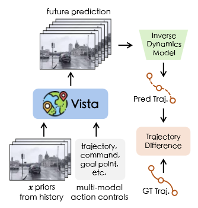
図13：表 3 における IDM 実験の図解。
図中ラベル：future prediction＝将来予測、x priors from history＝過去からの x 個の事前情報、multi-modal action controls＝マルチモーダル行動制御（trajectory, command, goal point, etc.＝軌跡、コマンド、目標点など）、Inverse Dynamics Model＝逆ダイナミクスモデル、Pred Traj.＝予測軌跡、GT Traj.＝真値軌跡、Trajectory Difference＝軌跡差
補助的な教師。3.1 節で提案した 2 つの損失の有効性を検証するため、両方の損失を組み込んだ変種から各損失を個別に除去することで、2 つの追加の変種を考案する。図 12 によってそれらの効果を定性的に比較し、ダイナミクス強化損失が実世界のダイナミクスの学習を促進でき、構造保存損失が構造的細部の予測を強化できることを確認する。
本論文では、忠実度と制御可能性を高めた汎化可能な運転世界モデル Vista を導入する。体系的な調査に基づき、Vista は高い時空間解像度で現実的かつ連続的な将来を予測できる。また、未知のシナリオへ汎化可能な多様な行動制御可能性も備えている。さらに、行動を評価する報酬関数として定式化することもできる。Vista が、汎化可能な自律システムの開発へのより広い関心を呼び起こすことを期待する。
限界と今後の課題。初期の取り組みとして、Vista には計算効率、品質の維持、学習規模に関していくつかの限界が依然として見られる。今後の研究では、我々の手法をスケーラブルなアーキテクチャ［54, 97］に適用することを検討する。さらなる議論は付録 A に含める。
本研究は、National Key R&D Program of China（2022ZD0160104）、National Natural Science Foundation of China（62206172）、Shanghai Committee of Science and Technology（23YF1462000）の支援を受けた。また、本研究は BMBF（Tübingen AI Center、FKZ: 01IS18039A）、DFG（SFB 1233、TP 17、プロジェクト番号：276693517）、および EXC（番号 2064/1 – プロジェクト番号：390727645）から部分的に支援を受けた。Kashyap Chitta を支援していただいた International Max Planck Research School for Intelligent Systems（IMPRS-IS）に感謝する。また、貴重なフィードバックをいただいた Zetong Yang、Chonghao Sima、Linyan Huang、および OpenDriveLab の他のメンバーに感謝する。人間による評価に協力していただいたすべての匿名の参加者に心から感謝の意を表する。
参考文献は原文のまま掲載した（各項目末尾の被引用ページ番号は省略）。
付録の目次（括弧内は原文 PDF のページ番号）
本研究の十分な理解を助けるため、生じうる直観的な疑問について議論する。
Q1. 一貫性のある将来を予測するのに、なぜ少なくとも位置、速度、加速度が必要なのか？
位置は、予測される将来が現在の状態から連続的に始まることを保証する。速度は物体がどのように動いているか、例えば左折しているのか右折しているのかを表す。加速度は速度が時間とともにどう変化するか、例えば周囲がより速く動いているのかより遅く動いているのかを表す。加速度を手がかりとして利用しなければ、自車を追い越そうとしている車が、次の自己回帰的予測ステップで突然追い越し終わってしまうことがありうる。これら 3 つの事前情報は、過去の観測に対して一貫した将来の延長を可能にする本質的な手がかりを提供する。
Q2. 提案する報酬関数の形はどのように定義されるのか？
いずれも離散的な予測を行う VIPER［28］や Diffusion Reward［60］とは異なり、我々のモデルは連続的な潜在変数を予測する。したがって、我々の報酬は対数尤度やエントロピーではなく、条件付き分散に従って推定される。加えて、対数尤度で不確実性を測るには予測を真値と比較する必要がある。我々は報酬を任意のシナリオに展開するので、VIPER の手法は我々の目的には実行不可能である。我々の報酬の計算は、コルモゴロフの公理を満たすよう、すなわち非負であり標本空間全体の測度が \( [0, 1] \) となるよう、注意深く設計されていることに注意されたい。（訳注：コルモゴロフの公理では標本空間全体の測度は 1 であり、「[0, 1]」という記述は厳密には不正確である。報酬値が [0, 1] の範囲に収まるという趣旨と思われる。）
Q3. 検出器ベースの手法［127］と比較した報酬推定の効率。
我々の報酬推定は複数回のデノイズを伴うが、Drive-WM［127］で定義された検出器ベースの報酬関数より多くの計算を費やすことはない。具体的には、Drive-WM は知覚結果から報酬を得る。検出器［82, 84］は画像系列を入力とするので、Drive-WM は知覚の前にデノイズ過程のすべてのステップを完了しなければならない。これに対し、我々の報酬関数は他の知覚モデルに頼ることなく、世界モデル自体に由来する不確実性で報酬を推定する。したがって、不確実性の推定には生成過程を完了する必要がない。各サンプルを数ステップだけデノイズすることで実現できる。実際、付録 C で規定するように、1 状況あたりの報酬推定に必要な総計算量（10 ステップ、5 回）は、Drive-WM のように動画全体を生成する計算量（我々のモデルでは 50 ステップ）を超えない。我々の報酬推定の計算コストは、効率をさらに高めるために柔軟に削減できることに注意されたい。図 14 に示すように、5 デノイズステップ（デフォルトの計算量の 50%）を用いても満足のいく報酬推定が得られる。
Q4. 提案する報酬関数の用途。
(1) 4.3 節で述べたように、提案する報酬関数は、既存の開ループ評価における懸念［18, 83, 141］を緩和する、運転行動の代替指標として役立つ可能性がある。(2) 図 10 で示したように、我々の報酬関数ではより良い行動ほど一般に高い報酬をもたらす。この性質を利用して、我々の報酬関数を批評家（critic）モジュール［76］として用いる大きな見込みがある。これにより、推定報酬を最大化する最適な行動を実行するモデル予測制御が可能になる［27, 30, 35］。この手順は、探索空間を縮小するための行動提案を行える分布ベースのプランナ［53, 148］と組み合わせて実行できる。
Q5. Vista の他の潜在的な応用は？
(1) 汎化可能な予測モデルとして、Vista は短期のダイナミクスをシミュレートし、視覚ナビゲーション［106］のような長期のプランニングタスクを支援する順ダイナミクスモデル［13, 26］として利用できる可能性がある。(2) 将来予測を通じて自発的に獲得される暗黙的な運転方策として Vista を利用することも興味深い［1, 25］。動画プランを合成した後、得られた画像軌跡を非因果的な逆ダイナミクスモデル［4, 65, 71］によって実行可能な行動に変換できる。このモデルは、模倣学習のパイプライン［2, 9］と比べてはるかに少ないデータから効率的に学習できる。自動運転では、逆ダイナミクスモデルはビジュアルオドメトリ［75］で実装できるだろう。(3) 報酬関数と連携して、Vista が実世界のシナリオにおけるサンプリング効率を高めることで、モデルベース強化学習を促進できるかどうかを調べることも価値がある［137］。
Q6. GenAD［136］との違い。
これら 2 つの研究には、制御の多様性と予測忠実度において根本的な違いがある。まず、Vista はマルチモーダルな行動条件によって制御できる汎化可能な世界モデルである。GenAD も軌跡で条件付けした拡張を学習しているが、その重みは nuScenes で完全にファインチューニングされており、その行動制御の汎化は一度も検証されていない。対照的に、Vista はゼロショットで新しいシナリオへ汎化できる多様な行動制御可能性を統合している。OpenDV-YouTube にコマンドとテキストのラベルを付ける必要がある GenAD とは異なり、我々の協調学習戦略は、ノイズや矛盾の蓄積を招く可能性のあるこの労力［136］を巧みに回避する。加えて、Vista（10 Hz、576×1024）ははるかに高いフレームレートと解像度で動作し、時間軸と空間軸の両方で GenAD（2 Hz、256×448）の能力を大きく超えている。GenAD とは異なり、我々は高忠実度の予測のためのいくつかの専用の設計も提示している。より低いモデル複雑度で、Vista は GenAD よりはるかに良い FID と FVD のスコアを達成することがわかった（表 2 参照）。
Q7. 限界、失敗例、および考えられる解決策。
先駆的な取り組みの 1 つとして、Vista には今後の研究を要するいくつかの限界が依然としてある。(1) Vista は並外れた時空間解像度で将来を予測するため、特に下流の応用において計算コストが高くなることは避けられない。考えられる解決策には、より高速なサンプリング技術［89, 146］や学習ベースの蒸留［91, 93, 101, 103, 110, 124］が含まれる。(2) 長期ロールアウトや急激な視点の変化において、予測が明らかな劣化を被る可能性がある。予測結果に対する追加の精緻化［6, 49, 54, 99, 126, 144］が役立つ可能性がある。推測ではあるが、我々のレシピをよりスケーラブルなアーキテクチャ［54, 97］に適用することも、この限界に対処するうえで有望である。(3) 他の制御可能な動画生成手法［128］と同様に、我々の行動制御にも、図 8 が示すように、特にコマンドや目標点のような曖昧な意図に対して失敗の可能性が依然として残る。行動アノテーションを持つより多くのデータセット［11, 112, 129］を協調学習に組み込むことが有益であろう。合成的な分類器フリーガイダンス［8, 19, 32］を用いて行動条件の個々の影響を増幅することも役立つかもしれない（推論計算量の増加と引き換えに）。(4) 我々の学習データは最大の公開運転データセット［136］に基づいているが、インターネット上の運転データ全体には遠く及ばず、Vista の能力をさらに拡張する未開拓の大きな可能性が残されている。
Q8. なぜ Vista の枠組みをサラウンドビュー生成に拡張しないのか？
サラウンドビュー生成をサポートすれば運転にさらに役立つことは確かである。既存研究［127, 145］は nuScenes［10］でサラウンドビューの設定を探求している。しかし本論文では、主に 3 つの理由から前方視点の設定に焦点を当てる。(1) 前方視点の設定では多様なデータソースを活用できる［54, 136］。逆に、カメラ台数の違いなど、さまざまなデータセットにおける多視点動画の相違は、統一的なモデリングとデータのスケーリングを妨げる。(2) 前方視点に焦点を当てたモデルは、適応なしに異なるデータセットへシームレスに適用でき［107］、データセットをまたいだ適用可能性が広がる。(3) 不完全ではあるが、前方視点には運転に不可欠な情報の大部分が含まれていることが多い。NAVSIM［23］で示されているように、前方視点のみを用いた場合、5 台のサラウンドビューカメラを用いた場合と比べて衝突率の性能低下はわずか 1.1% である。
Q9. より広範な影響。
有望な改善にもかかわらず、非常に複雑な状況への対処を伴う実世界の応用に関しては、我々の研究は決して完璧ではない。Vista は拡散の枠組みに基づいており、確率的な結果と無視できない遅延をもたらすため、自動運転車に直接展開すると安全上のリスクを生じる可能性がある。まだ万能の解決策ではないが、Vista がコミュニティを刺激し、運転世界モデルの能力と応用をさらに活用することを期待する。汎化可能な運転世界モデルのプロトタイプとして、Vista が自動運転と機械知能のための汎化可能なシステムの開発に関する研究を活性化することを願っている。
知的なエージェントは、未知の状況においても効果的な意思決定を行えるべきである［9, 57, 76, 113, 138, 149］。これには、まれなケースにも汎化する世界に関する基礎的な知識が必要である。そのような知識の内的な表れとして、世界モデルは潜在的な行動が与えられたときの世界のもっともらしい将来を予測する［9, 40, 69, 76, 96, 113, 137］。原理的には、世界モデルは環境が時間とともにどう展開するかを予測するだけでなく、根底にある物理的ダイナミクスとエージェントの振る舞いも推論する。こうした性質は、表現学習［35, 45, 88, 105, 131］、モデルベース強化学習［39, 40, 42, 43, 94, 96, 98］、ならびにモデル予測制御［27, 30, 35, 41, 92, 104, 142］に有用でありうる。最近の手法［37, 44, 80, 85, 86］は大規模言語モデルから言語ベースの世界モデルを導き出しているが、テキスト空間に制限されており、物理への接地（grounding）に苦戦している［26, 59］。
世界モデルはシミュレートされたゲーム［40, 42, 43］や屋内の身体性（embodiment）［72, 92, 120］において広く応用され、大きな革新をもたらしてきたが、自動運転に関するそうした研究はまだ遅れている［127, 143］。他のタスクとは異なり、自動運転のための世界モデリングは独特の課題を提起する。それは主に、非常に動的な動きを伴う広い視野に起因する。一部の取り組みは鳥瞰図（BEV）空間で世界を想像する［20, 31, 52, 53, 78, 81］。最近の取り組みは、世界の状態を点群［7, 67, 140, 143, 147］や画像［54, 61, 68, 90, 102, 125, 127, 131, 145］のような生のセンサ観測としてモデル化する。後者のカテゴリ、すなわち視覚的世界モデルは、センサの柔軟性とデータの入手しやすさから、スケールアップに関してより有望である。それにもかかわらず、既存の手法は特定のデータセット［61, 77, 90, 125, 127, 143, 145, 147］やシミュレータ［7, 131］に制限されており、新しいドメインへの汎化能力が損なわれている。一方、これらの取り組みは運転ドメインのための体系的な設計を欠いており、比較的低いフレームレートと解像度でしか世界をモデル化しないため、細粒度の詳細が失われ、実世界の振る舞いを表現する能力が損なわれている。さらに、それらのほとんどは特定の制御モダリティに制限されており［54, 61, 90, 125］、一般的なプランニングアルゴリズム［12, 14, 21, 56, 58, 64］への対応や、意思決定［127］やユーザとの対話［74］のようなより多くの応用への拡張を妨げている。加えて、既存の手法は異なるデータセットにまたがるゼロショットの行動制御可能性をほとんど探求していない。劣った汎化、忠実度、制御可能性が相まって、既存の運転世界モデルが自動運転の発展を広く促進することを妨げている。
動画生成は世界をモデル化する効果的な方法であり、長年にわたって目覚ましい進歩を遂げてきた。先駆的な研究［119, 134］はさまざまな種類の生成モデル［29, 33, 70］を研究した。拡散モデル［24, 48, 100］の成功に影響され、拡散ベースの動画生成手法が急増した［6, 34, 46, 51, 108, 117, 121］。最近の研究［5, 15, 32, 144］は、より細かな内容記述と学習データにおけるより良いスケーラビリティのために、画像から動画への生成へと焦点を移している。しかし、それらのほとんどは条件画像から始まる動画を生成する厳密な予測モデルではない。さらに、既存の手法は自車視点の運転シナリオにおける複雑なダイナミクスに苦戦しており［136］、運転世界モデルとしての実現可能性が制限されている。
既存の手法の大半は明示的な制御可能性なしに動画を生成するが、最近の 2 つの研究［128, 139］は動画生成にカメラの動きの制御を導入している。しかし、カメラの動きは概念的に車両の行動とは異なり、これらの研究はいずれも予測能力を持たないテキストから動画への手法である。対照的に、我々が開発したモデルは、現実的なダイナミクスを生成し、自動運転のための多様な行動制御を可能にする予測的な世界モデルである。
Vista のアーキテクチャとして SVD［5］の枠組みを採用する。これは 1.6B の UNet パラメータを含む合計 2.5B のパラメータからなる。行動の条件付けのため、各行動系列の値を 128 チャネルのフーリエ埋め込み［114, 116］に符号化する。
学習には厳密にフィルタリングした OpenDV-YouTube［136］のセットを利用し、行動制御の学習段階では nuScenes の学習セット［10］を組み込む。具体的には、OpenDV-YouTube から無関係な内容 15 時間分を手作業で除去し、約 1735 時間のラベルなし運転動画を得る。nuScenes は大きく偏っているため［83, 107, 127］、まれな行動の学習を促すため、コマンドのカテゴリに基づいてそのサンプルのバランスをとる。動画クリップは 10 Hz で 25 フレームをサンプリングする。nuScenes［10］は 12 Hz で記録されているが、それを 10 Hz の動画として扱っても悪影響はないことがわかった。モデルの入力は、これらのクリップを目標の解像度にクロップしリサイズすることで構成される。行動は 25 フレームからなる系列として定義する。行動をコマンドに分類するため、プランニングにおける確立された慣例［56, 58, 64］に従い、自車の最終的な変位が初期の進行方向に対して直交方向に 2 メートルを超える場合に、自車のコマンドを "turn right"（右折）または "turn left"（左折）と定義する。より精密な分類を可能にするため、前方への走行距離が 2 メートル未満の場合には "stop"（停止）コマンドを追加で導入する。
第 1 学習段階では、128 基の A100 GPU で、576×1024 の解像度ですべての UNet パラメータを 20K 反復学習し、合計で約 8 日を要する。2 ステップ分の勾配を累積し、実効バッチサイズは 256 となる。SVD に従い、モデルは EDM の枠組み［66］で学習される。学習率 \( 1\times10^{-5} \) の AdamW オプティマイザ［87］を用いる。空間層の学習率は割引係数 0.1 で抑制する。式 (6) の係数 \( \lambda_1 \) と \( \lambda_2 \) はそれぞれ 1.0 と 0.1 に設定する。時間的な滑らかさの改善に役立つため、強度 0.02 のオフセットノイズ［38］も用いる。異なる次数の動的事前情報を、増加する確率で、すなわち条件フレーム 0、1、2、3 個に対してそれぞれ 1/15、2/15、4/15、8/15 でランダムにサンプリングする。条件フレームからより多くの細部を保持するため、ノイズ拡張［49］は無効にする。
行動制御の学習段階では、事前学習済みの重みを凍結し、UNet のすべてのアテンションブロックに LoRA［55］と射影層を追加する。LoRA のランクは 16 に設定する。次に、新しい重みを 320×576 の解像度で、バッチサイズ 8、学習率 \( 5\times10^{-5} \) で 120K 反復学習する。制御可能性が明確に確認できた後、凍結していない重みを 576×1024 の解像度でさらに 10K 反復ファインチューニングする。分類器フリーガイダンス［50］を可能にするため、有効化された各行動モードを 15% の割合でドロップアウトする。この学習段階での OpenDV-YouTube と nuScenes のサンプリング比は 1 : 1 である。行動制御可能性のための学習過程全体は 8 基の A100 GPU で約 10 日を要し、そのうち低解像度でおよそ 8 日、高解像度で 2 日である。
DDIM サンプラ［109］を用いて 50 ステップで将来の動画を生成する。サンプリングは \( \sigma_{\text{max}} \) = 700.0 から開始する。我々のモデルは自己回帰的に長期の将来を予測するため、標準的な分類器フリーガイダンスによって生じる過飽和の問題が急速に蓄積する。したがって、ガイダンススケールを線形に増加させる SVD とは異なり、真の長期ロールアウトを可能にするために三角形の分類器フリーガイダンス方式［118］を採用する。具体的には、予測する \( K \) フレームのうち \( i \) 番目のフレームに対し、そのガイダンススケール \( s(i) \) を次のように割り当てる。
\[ s(i) = \begin{cases} s_{\text{min}} + \frac{2i}{K}(s_{\text{max}} - s_{\text{min}}) & \text{if } i \lt \frac{K}{2} \\ s_{\text{max}} - \frac{2(K-i)}{K}(s_{\text{max}} - s_{\text{min}}) & \text{if } i \ge \frac{K}{2} \end{cases}, \tag{9} \]
ここで \( s_{\text{min}} \) と \( s_{\text{max}} \) は時間軸に沿った最小および最大のガイダンススケールを表す。実験では、\( s_{\text{min}} \) を 1.0、\( s_{\text{max}} \) を 2.5 と定義する。この三角形方式は、次の予測ラウンドで条件として使用されるフレームに中程度のガイダンススケールを割り当てる。十分な時間的相互作用により、中間フレームの品質はガイダンススケールの低いフレームにも伝播しうる。図 15 に示すように、この技術は細部を強化しつつ彩度のドリフトの問題を巧みに緩和する。知覚的な連続性を改善するため、生成された潜在変数を、動画対応デコーダ［5］に送る前に 3 フレームの重なりを持つクリップに分割する。デコード後、重なったフレームはピクセル単位で平均される。（訳注：式 (9) の第 2 行をそのまま読むと \( i = K/2 \) で \( s_{\text{min}} \)、\( i = K \) で \( s_{\text{max}} \) となり、第 1 行と不連続で「三角形」にならない。中央で最大・両端で最小とする意図であれば、第 2 行は \( s_{\text{min}} + \frac{2(K-i)}{K}(s_{\text{max}} - s_{\text{min}}) \) が正しいと思われる。）
参加者には、左右に並べた動画のペアを視覚的品質と動きの合理性の観点から判断するよう求めたことを思い出されたい。信頼できる回答を保証するため、人間による評価の各観点について詳細な説明を提供する。視覚的品質については、参加者に生成内容の一貫性と調和に注目してもらう。動きの合理性については、自車や他のエージェントの動き方のもっともらしさ、例えば交通規則に従い安全な振る舞いを示しているかどうかに、より注意を払うよう促す。比較したすべての公開モデルについて、ファインチューニングなしで公式のチェックポイントと推論設定を用いる。テキスト入力を必要とするモデル［133, 144］については、プロンプトを "realistic drive view" に設定する。
| 条件 | 平均報酬 |
|---|---|
| GT Com.（真値コマンド） | 0.892 |
| random Com.（ランダムコマンド） | 0.878 (-0.014) |
表4：Waymo におけるコマンドの報酬。真値のコマンドは一般にランダムなコマンド入力よりも高い報酬を得ており、提案する報酬関数がコマンド選択の信頼できる指標として使用できることを示唆している。
| 戦略 | 行動 | サブセット FVD ↓ | |||
|---|---|---|---|---|---|
| forth（前進） | right（右折） | left（左折） | stop（停止） | ||
| w/o A.I. | w/o Traj. | 163.0 | 273.9 | 428.3 | 497.1 |
| w/ Traj. | 138.8 | 232.9 | 368.2 | 132.3 | |
| w/ A.I. | w/o Traj. | 156.2 | 263.7 | 402.9 | 463.7 |
| w/ Traj. | 130.7 | 230.8 | 345.7 | 118.9 | |
表5：行動の独立性の効果。一般性を失うことなく、評価のための代表的な行動として軌跡を選択する。提案する制約は行動の学習を促進する。（A.I.＝行動の独立性（action independence）、Traj.＝軌跡、w/o＝なし、w/＝あり）
信頼できる不確実性推定を得るため、各条件フレームと行動のペアについて、サイズ \( M = 5 \) のアンサンブルを蓄積する。不確実性推定には高品質な結果を生成する必要はないことがわかったため、アンサンブル内の各サンプルは 10 デノイズステップで推論する。相関付け戦略［35, 95］の係数 \( \beta \) は 0.5 に設定する。
損失関数のアブレーションでは、各変種を OpenDV-YouTube［136］で 576×1024 の空間解像度で 10K ステップ学習する。付録 D の追加のアブレーションを含むすべてのアブレーションは、SVD［5］の事前学習済みチェックポイントを読み込んで初期化し、8 基の A100 GPU で実施する。
デノイズステップ数とアンサンブルサイズが提案する報酬関数の性能にどう影響するかを調べるため、4.3 節の報酬推定手順を異なるハイパーパラメータ設定で繰り返す。まず、各サンプルに 5 デノイズステップとアンサンブルサイズ 5 を用いることから始める。次に、デノイズステップを 10 に増やす（付録 C の我々のデフォルト設定）変種と、アンサンブルサイズを 10 に増やす変種という、計算コストを 2 倍にする 2 つの変種をテストする。4.3 節に従い、3 つの変種について推定報酬と L2 誤差との相関を図 14 にプロットする。結果は、デノイズステップ数を増やすと報酬の相対的な差を大きく拡大できることを示しており、報酬推定において同じ計算予算の下では、デノイズステップがアンサンブルサイズよりも重要な要因であることを示唆している。
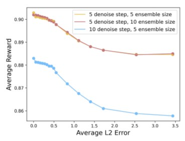
図14：ハイパーパラメータに対する報酬推定の感度。デノイズステップ数を増やすとより識別力のある報酬が得られ、アンサンブルサイズを増やすと推定がわずかに安定する。
図中ラベル：Average Reward＝平均報酬、Average L2 Error＝平均 L2 誤差、5 denoise step, 5 ensemble size＝デノイズ 5 ステップ・アンサンブルサイズ 5、5 denoise step, 10 ensemble size＝デノイズ 5 ステップ・アンサンブルサイズ 10、10 denoise step, 5 ensemble size＝デノイズ 10 ステップ・アンサンブルサイズ 5
提案する報酬関数が他の行動にも適用可能であることを示すため、Waymo の真値コマンドの報酬を推定し、ランダムなコマンドの報酬と比較する。表 4 の結果は、我々の報酬がコマンド選択にも有効であることを示唆している。
行動制御のための我々の学習戦略の有効性を証明するため、3.2 節で提案した行動独立性の制約を取り除いて比較を行う。2 つの変種を nuScenes［10］で 320×576 ピクセルの解像度で 62K ステップ学習する。比較結果を表 5 に示す。
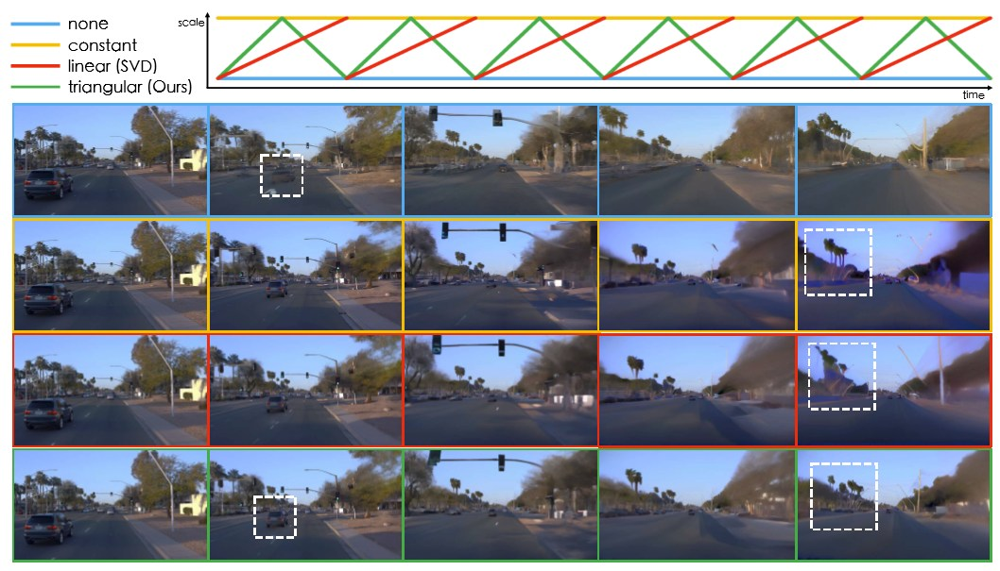
図15：ガイダンススケールの効果。異なる CFG 方式で 15 秒の長期動画を予測する。我々の手法は、細部の生成と彩度の維持の間で最適な均衡を達成する。
図中ラベル：none＝なし、constant＝一定、linear (SVD)＝線形（SVD）、triangular (Ours)＝三角形（提案手法）、scale＝スケール、time＝時間。各行の枠の色が凡例の方式に対応する。
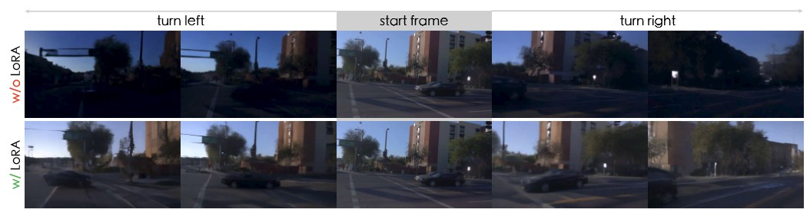
図16：LoRA による適応の必要性。LoRA なしで新たに追加した射影のみを学習すると、視覚的な破綻が生じる。比較した変種は nuScenes で学習し、Waymo で推論している。
図中ラベル：turn left＝左折、start frame＝開始フレーム、turn right＝右折、w/o LoRA＝LoRA なし、w/ LoRA＝LoRA あり
導入した分類器フリーガイダンス方式の必要性を検証するため、通常の方式および線形方式［5］とさらに比較する。図 15 は、我々の三角形のスケーリングが視覚的品質と彩度の保持の間で最良のトレードオフを達成することを示している。
3.2 節で LoRA を適用する必要性を示すため、2 つの変種を 320×576 ピクセルの解像度で 30K 反復学習する。事前学習済みの UNet の重みを固定したまま、一方の変種ではアテンションブロック内の LoRA と行動射影層を学習させ、もう一方では新しい射影層のみを調整する。図 16 に示すように、LoRA の追加は行動制御の学習に不可欠である。
表 6 に図 8 の完全な FVD スコアを報告し、あらゆる種類の行動制御の有効性をさらに検証する。我々の "stop" サブセットは最終的な変位が 2 メートル以内のサンプルからなるため、これらの動画には通常、目標点が現れないことに注意されたい。したがって、"stop" サブセットで目標点を行動条件として用いる実験では、ほとんどのサンプルが行動なしモードと同じ方法で生成される。
| データセット | 条件 | サブセット FVD ↓ | ||||
|---|---|---|---|---|---|---|
| forth（前進） | right（右折） | left（左折） | stop（停止） | average（平均） | ||
| nuScenes | action-free（行動なし） | 135.6 | 405.6 | 513.8 | 414.1 | 367.2 |
| + goal point（目標点） | 122.4 | 315.6 | 439.6 | 413.5 | 322.7 | |
| + command（コマンド） | 122.2 | 299.7 | 485.6 | 261.6 | 292.2 | |
| + angle & speed（角度と速度） | 122.8 | 285.6 | 397.8 | 114.1 | 230.0 | |
| + trajectory（軌跡） | 125.2 | 229.2 | 357.7 | 118.5 | 207.6 | |
| Waymo | action-free（行動なし） | 145.9 | 407.6 | 529.9 | 164.1 | 311.8 |
| + command（コマンド） | 122.5 | 331.5 | 496.9 | 143.9 | 273.7 | |
| + trajectory（軌跡） | 126.3 | 285.5 | 527.6 | 136.5 | 268.9 | |
表6：異なる行動カテゴリの完全な FVD スコア。コマンドのカテゴリで分割した 4 つのサブセットで FVD スコアを求める。あらゆる種類の行動制御が、すべてのカテゴリにわたって有効である。
我々の知る限り、これまでに公開されている運転特化の世界モデルは存在せず、定性的な人間による評価を行うことは困難である。そのため、表 2 では主に公式に報告された FID と FVD のスコアで Vista を既存手法と比較している。
視覚的品質と動きの合理性における大幅な改善を示すため、最先端の GenAD モデル［136］との追加の人間による評価を行う。GenAD は一度に 4 秒の動画を処理するため、自己回帰的な予測を行って Vista の出力を 5 秒に延長し、GenAD の長さに合わせるために最後の 1 秒を切り詰める。解像度と周波数によるバイアスを避けるため、Vista の出力（10 Hz で 576×1024 の解像度）を 2 Hz で 256×448 の解像度にダウンサンプリングする。評価は 4.1 節で規定したのと同じ手順に従う。
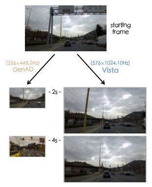
図17：GenAD と Vista の知覚的な差。
図中ラベル：starting frame＝開始フレーム、GenAD (256×448, 2Hz)、Vista (576×1024, 10Hz)、- 2s - ／ - 4s -＝2 秒後／4 秒後
未知の OpenDV-YouTube-val セットから多様な 25 サンプルを収集し、20 名のボランティアを評価に招く。ボランティアには、より良いと思う動画を選ぶよう求める。その結果、Vista は視覚的品質と動きの合理性でそれぞれ 94.4% と 94.8% の割合で好まれた。これは、Vista がダウンサンプリングによって大きな知覚的劣化を被っているにもかかわらず、生成品質において GenAD に対して依然として大きな優位性を示すことを証明している。また、図 17 で GenAD と Vista の予測を比較し、解像度と忠実度における Vista の優位性を示す。
Vista を実環境のさまざまなシナリオに展開することで、Vista の強い汎化能力をさらに示す。図 18 と図 19 の結果は、Vista が非常に多様な範囲のシナリオで高忠実度の予測を行えることを示している。
図 6 に加えて、長期予測のより多くの定性的な可視化を図 20 に示す。Vista は一貫した内容と動きを伴う長期の将来を連続的に予測できる。
異なる行動入力によるさらなる予測結果を図 21 に示す。OpenDV-YouTube-val［136］と Waymo［112］での結果は、Vista の多様な制御可能性がゼロショットで異なるドメインに容易に転移できることを示している。
反実仮想的推論能力は世界モデルの創発的能力の 1 つである［36］。図 22 に示すように、Vista は異常な行動によって引き起こされる反実仮想的な結果を効果的に予測できる。
人間による評価（4 節）のために選んだシーンの多様性を示すため、OpenDV-YouTube-val［136］、nuScenes［10］、Waymo［112］、CODA［79］から集めたすべての事例を図 23 に示す。
我々の学習と評価には、公開ライセンスされた 4 つのデータセット［10, 79, 112, 136］のデータを利用している。我々の実装は SVD［5］のコードベースに基づいており、これは MIT ライセンスを使用している。SVD の事前学習済みチェックポイントは、stable video diffusion non-commercial community license の下で配布されている。
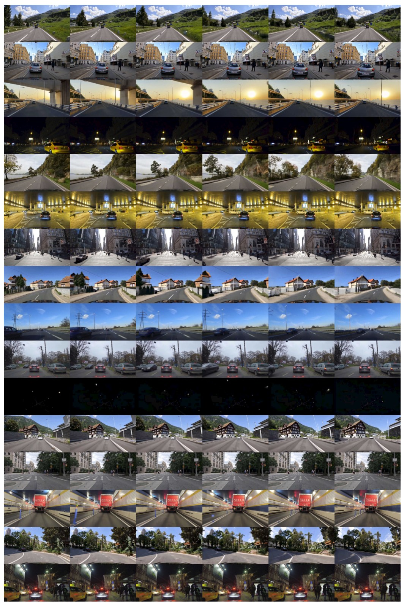
図18：Vista の汎化能力。Vista を、未知のカメラ姿勢（例えば2 階建てバスからの視点）を伴う多様なシーン（例えば田園地帯やトンネル）に適用する。我々のモデルは、車両や歩行者の生き生きとした振る舞いを伴う高解像度の将来を予測でき、強い汎化能力と世界知識への深い理解を示している。拡大して見ることを推奨する。
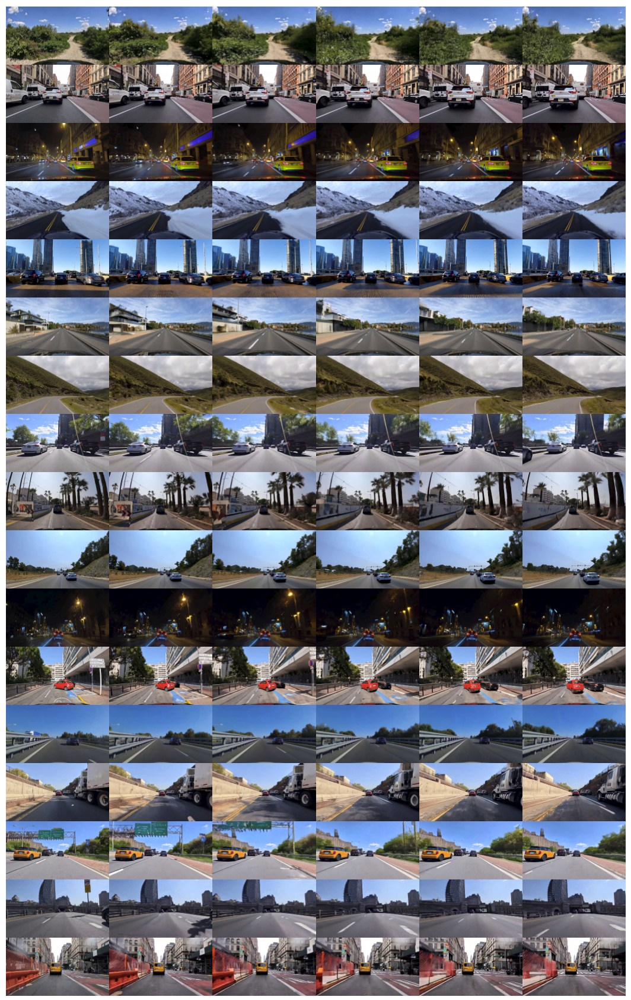
図19：より多くのシナリオにおける Vista の汎化能力。拡大して見ることを推奨する。
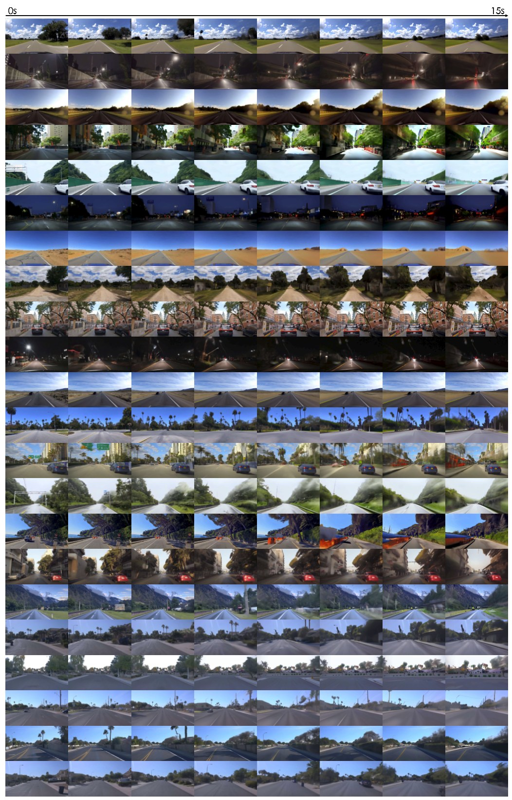
図20：長期予測の追加結果。我々のモデルは、わずかな品質低下で長い運転体験を自己回帰的にシミュレートできる。すべての動画は 10 Hz で 15 秒間続く。
図中ラベル：0s〜15s＝0 秒〜15 秒（時間軸）
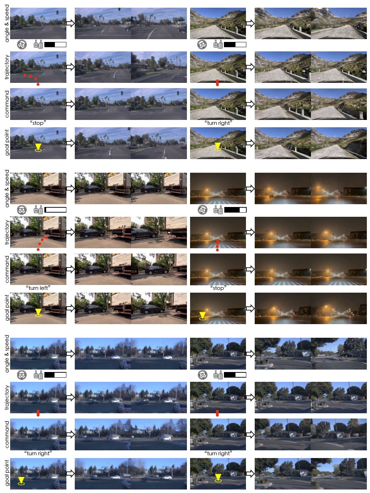
図21：行動制御可能性の追加結果。OpenDV-YouTube-val と Waymo の複数のシーンにわたって異なる行動条件を試す。自車の振る舞いは、さまざまな種類の介入によって一貫して制御できる。
図中ラベル：angle & speed＝角度と速度、trajectory＝軌跡、command＝コマンド、goal point＝目標点、"stop"＝「停止」、"turn right"＝「右折」、"turn left"＝「左折」
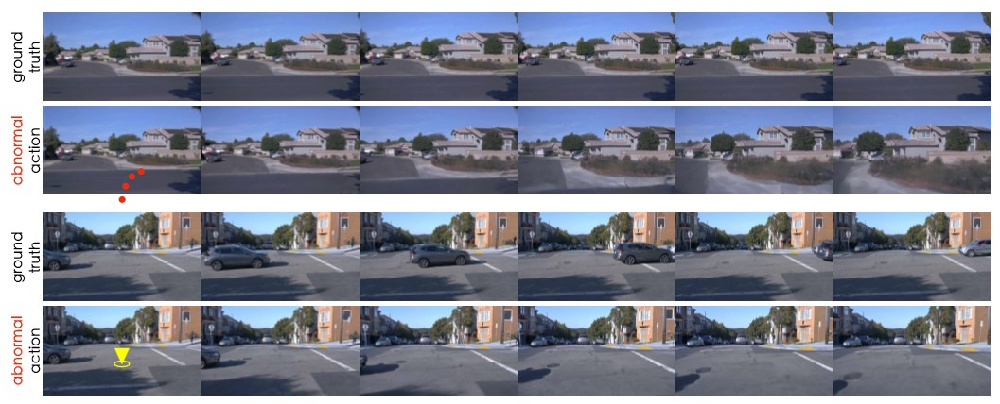
図22：反実仮想的推論能力。交通規則に違反する行動を課すことで、Vista が異常な介入の結果も予測できることを発見した。1 つ目の例では、自車は我々の指示に従って道路境界を越え、茂みに突っ込む。2 つ目の例では、自車を交差点で強制的に進行させると、通過しようとしていた車が衝突を避けるために停止して待つ。これは、閉ループシミュレーションを促進する Vista の可能性を示している。
図中ラベル：ground truth＝真値、abnormal action＝異常な行動
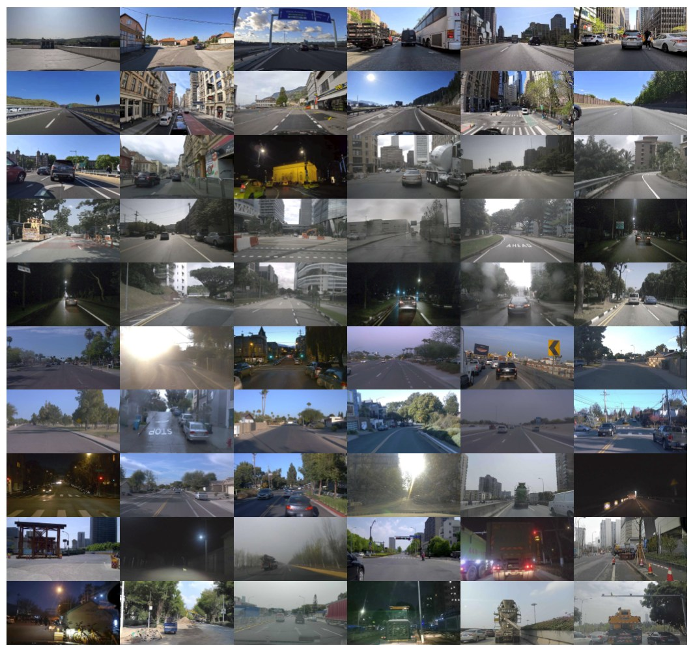
図23：人間による評価のために収集した多様なシーン。OpenDV-YouTube-val、nuScenes、Waymo、CODA から 60 シーンを慎重に選定する。各データセットの特徴的な属性が合わさって実世界環境の多様性を表しており、包括的な人間による評価を可能にしている。